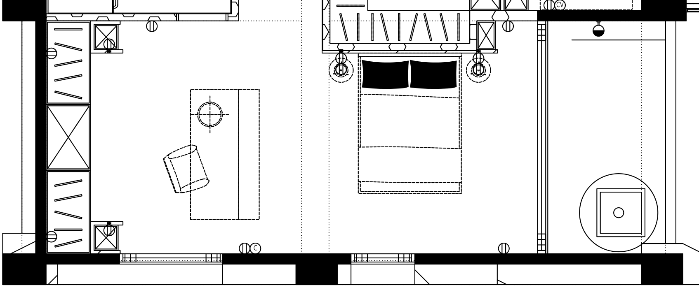

← 回到互動 3D臥室 A · 原圖全部插座位置
10 處配置點12 個插座符號另有 C 端點 × 1高度未標註
依第 64 頁「3F 水弱電配置圖」（115.09.08）。涵蓋臥室 A、原閱讀／衣櫃區；陽台不同符號另列 U01。點圓點可看該位置說明。

這些是原設計點位，尚未配合新床位或新衣櫃移動。12 個符號不等於 12 個插孔；電壓、面板形式、安裝高度與 C 的用途均未確認。3D 的圓點顯示平面投影位置，放在地板上方方便查看，不代表落地插座。
第 39 頁是較早的 115.07.29 版，點位有差異，本頁不將兩版疊加。原圖沒有明確高度，因此不以一般常見高度代替施工標註。
點位資料與來源